The Unforseeable Fate of Mr.Jones (Book)
Inspired by the song of the same name by Foster the People, 'The Unforeseeable Fate of Mr. Jones' is a two-part project that explores the concept of self-reflection through the lens of standardized tests. It includes the creation of both a book and a website.
Genre
#Book Design #Web Design
#Web Development
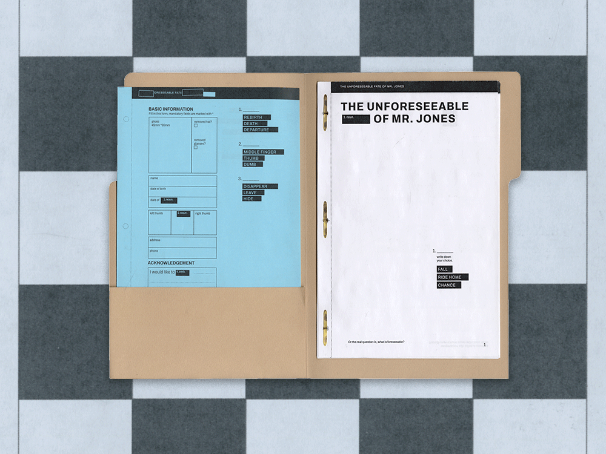
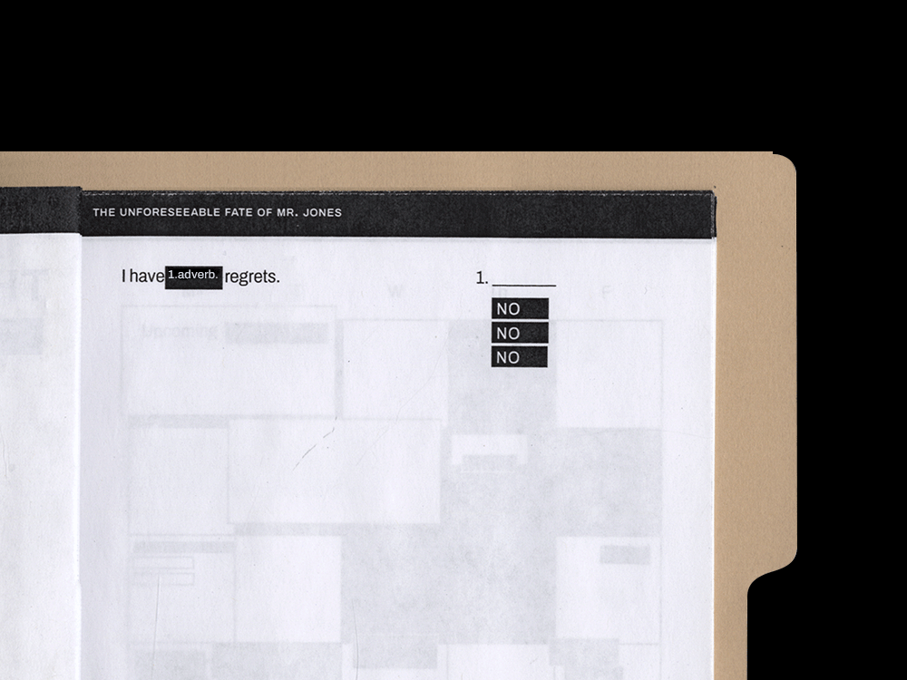
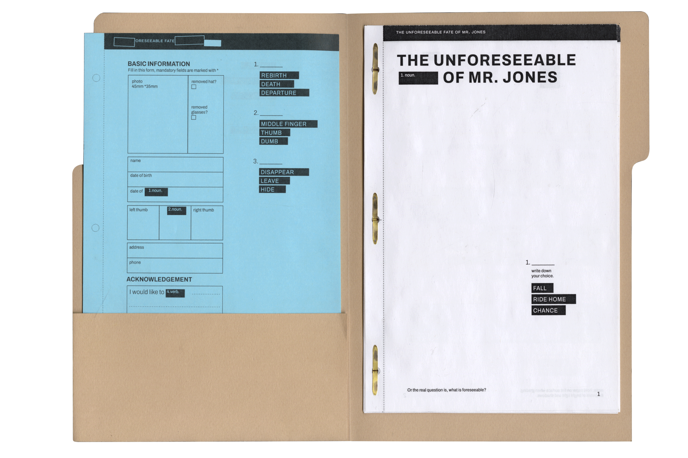
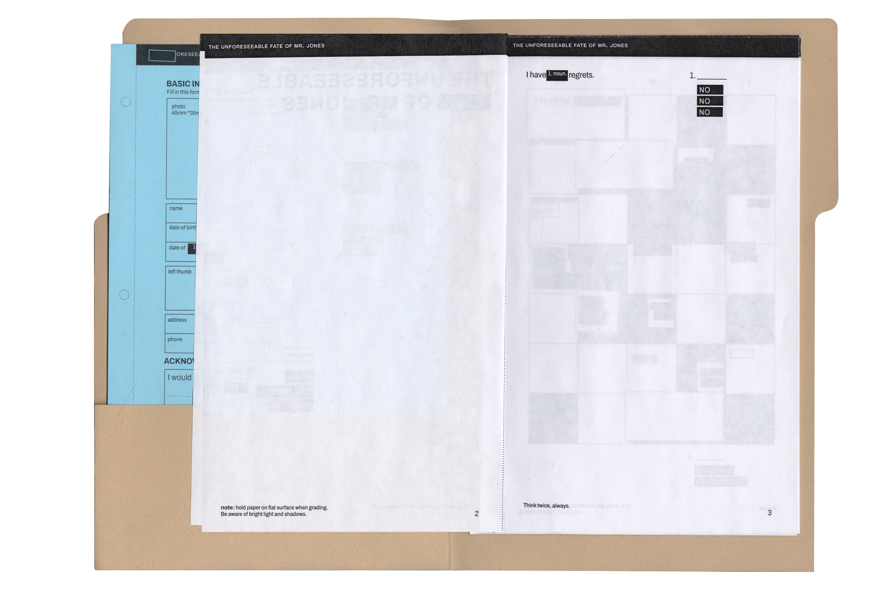
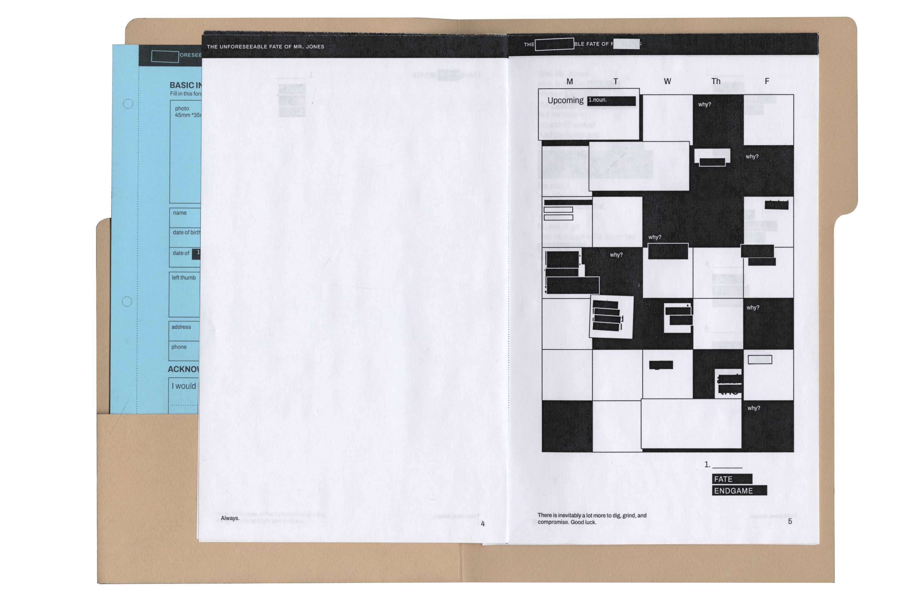

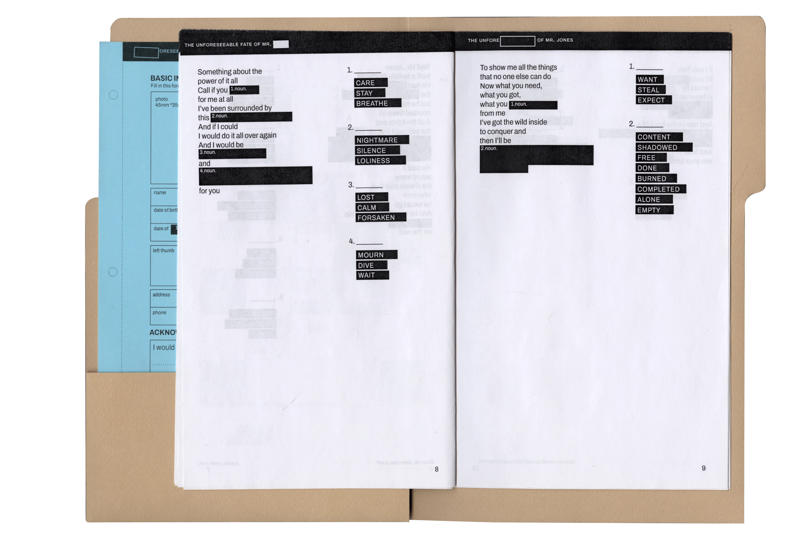
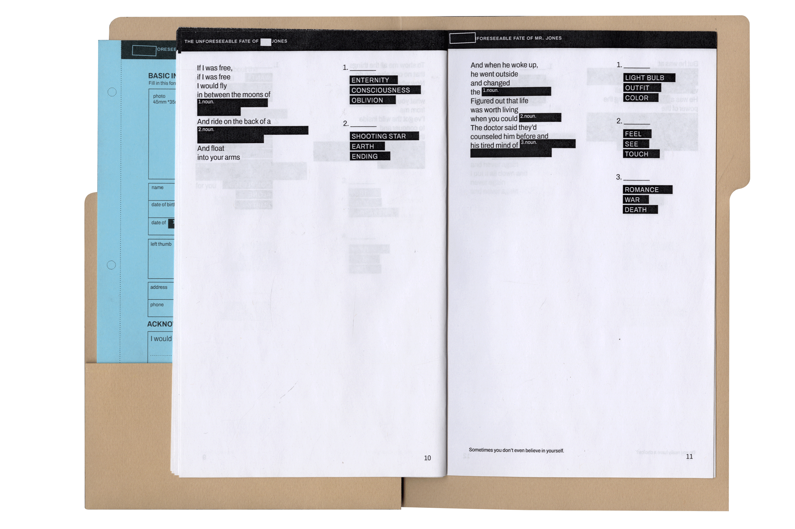
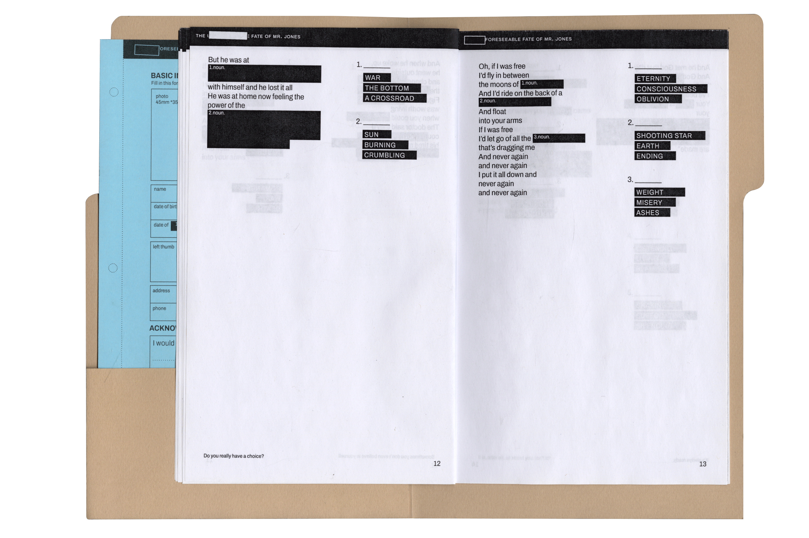
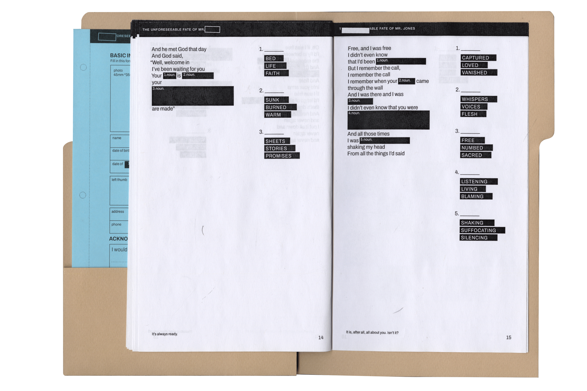
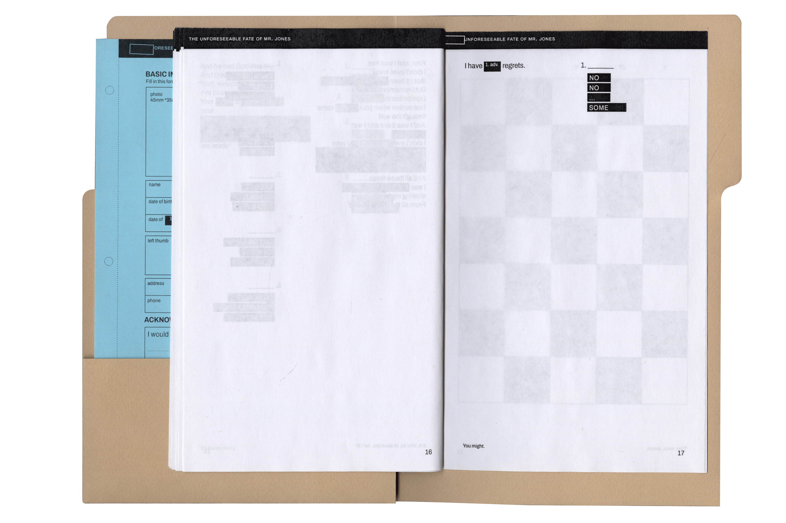
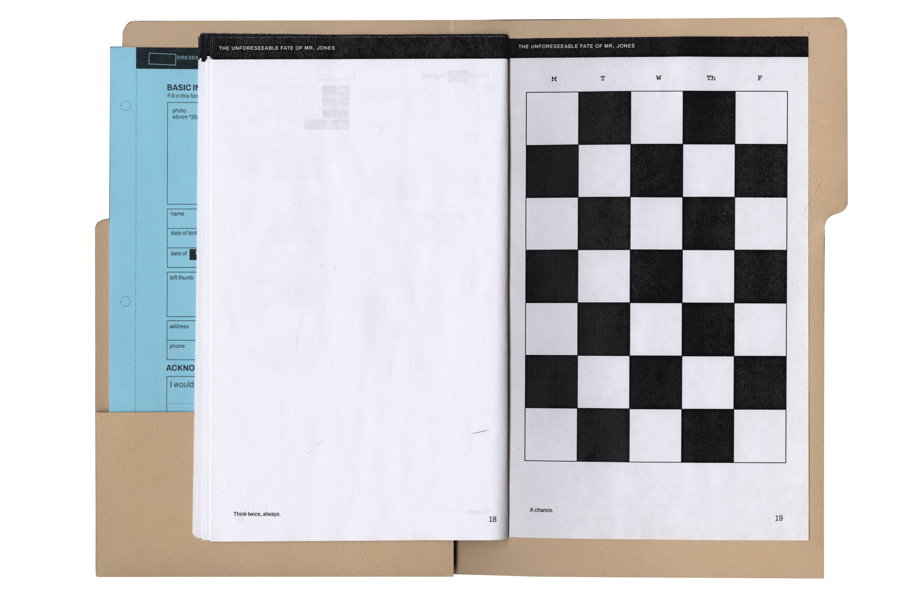
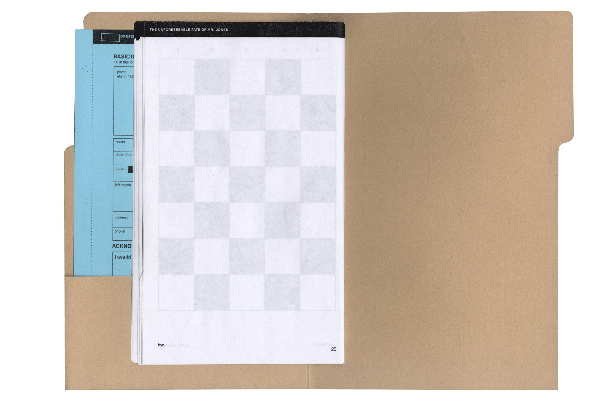
The Unforseeable Fate of Mr.Jones (Web)
The web component of "The Unforeseeable Fate of Mr. Jones" explores the monotonous and tedious aspects of online tests.
Click here to access the it.
Return Home